South Surrey & White Rock#
Where Nature Meets Suburbia in Metro Vancouver
Nestled at the southernmost tip of Metro Vancouver, South Surrey & White Rock is like the glitzy pearl on the necklace of the Lower Mainland. It’s where the Canadian border kisses the ocean, creating a haven for those who crave suburban bliss with a dash of coastal charm. The place is growing faster than a teenager in a growth spurt, attracting more folks than an “all-you-can-eat” buffet.
Geographical location#
South Surrey & White Rock is located at the southernmost point of Metro Vancouver, and is bounded by the ocean to the west, Semiahmoo Bay and the border to the United States of America to the south, the Township of Langley to the east and for the most part 48th Avenue to the north.
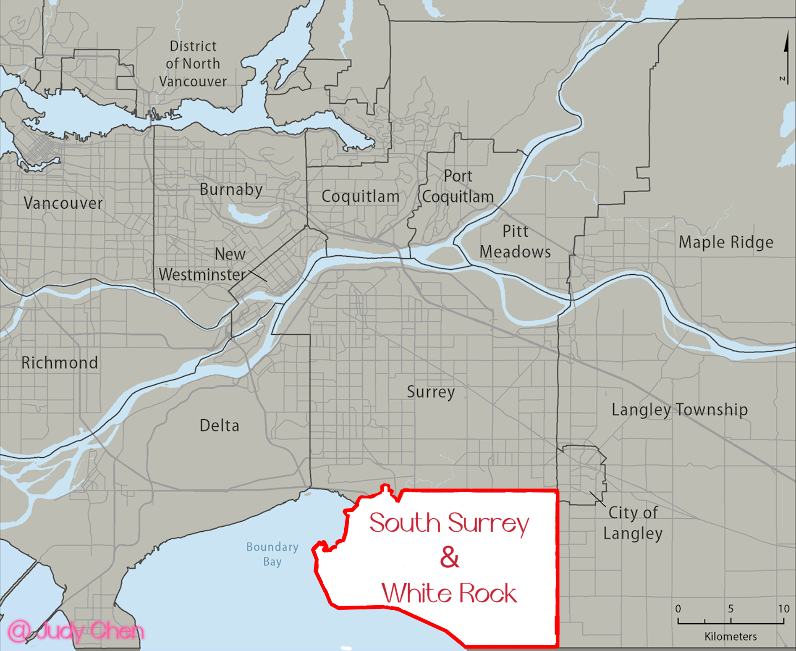
Climate#
While the rest of British Columbia wrestles with raindrops, South Surrey & White Rock sips on its cocktail of sunny days. Summer temperatures hover around a pleasant 20°C, and winters politely refrain from plunging into freezing territory. It’s the kind of weather that makes outdoor enthusiasts grin from ear to ear, whether you’re frolicking on the beach or hiking through nearby parks.
Transportation#
South Surrey & White Rock is well-connected by major highways, including the swanky Highway 99, highway 15, and the King George Boulevard. You can zip from downtown Vancouver in just 45 minutes, reach Vancouver International Airport in 35 minutes, and practically wave hello to the US border in mere minutes.
But here’s the plot twist: public transit is a bit of a rare unicorn here. So, unless you’re buddies with a rideshare driver or have a car with a personality of its own, you might find yourself relying on four wheels for your daily adventures.
Top Attractions#
South Surrey & White Rock isn’t shy when it comes to showing off its attractions. Here are some crowd-pleasers:
White Rock Pier: This pier doesn’t just hold Canada’s longest pier title; it’s also a hub of family fun, beach strolls, and fish and chips fiestas.
Peace Arch Provincial Park: It’s not just a park; it’s a peace monument that’s been spreading good vibes between Canada and the USA since 1921. Expect walking trails, picnic spots, and an overdose of serenity.
Crescent Beach: If you can’t find serenity here, you’re not looking hard enough. Kilometers of sandy beach invite you for sunset spectacles, birdwatching, paddling, whale-spotting, picnics, and swims.
Redwood Park: Ever wondered what it’s like to frolic in a grove of mature Sierra Redwoods or stumble upon fairy houses in an enchanted land? Wonder no more!
The Glades Woodland Garden: With over 3,500 mature rhododendrons, azaleas, and heritage-designated trees, it’s like stepping into a horticultural wonderland.
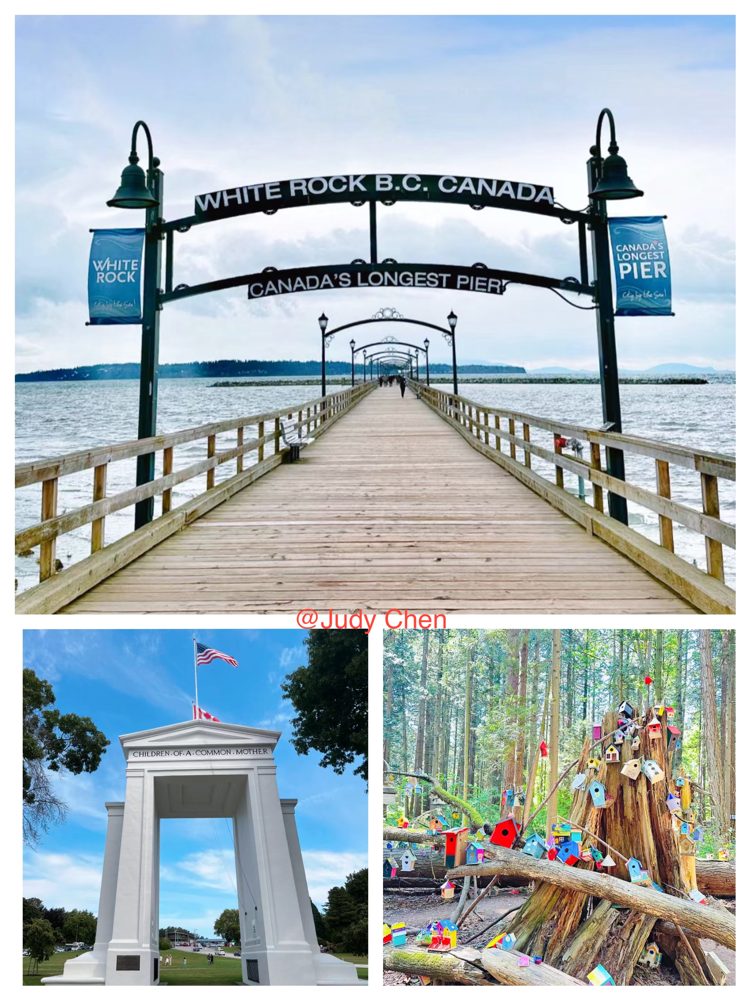
Demographics#
Population#
In 2021, the population was 119,672, a 15% leap since 2016, compared to an increase of only 7.3% of Metro Vancouver. And you’ll find a whopping 38,905 folks aged 60 or above, making up about a third of the population. Retirement central!
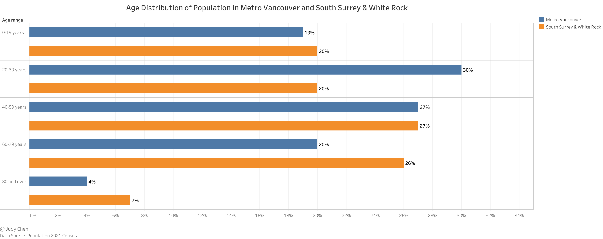
In 2021, 62% of residents were Caucasian, but the Chinese community came in strong at 16%, with South Asians at 12%.
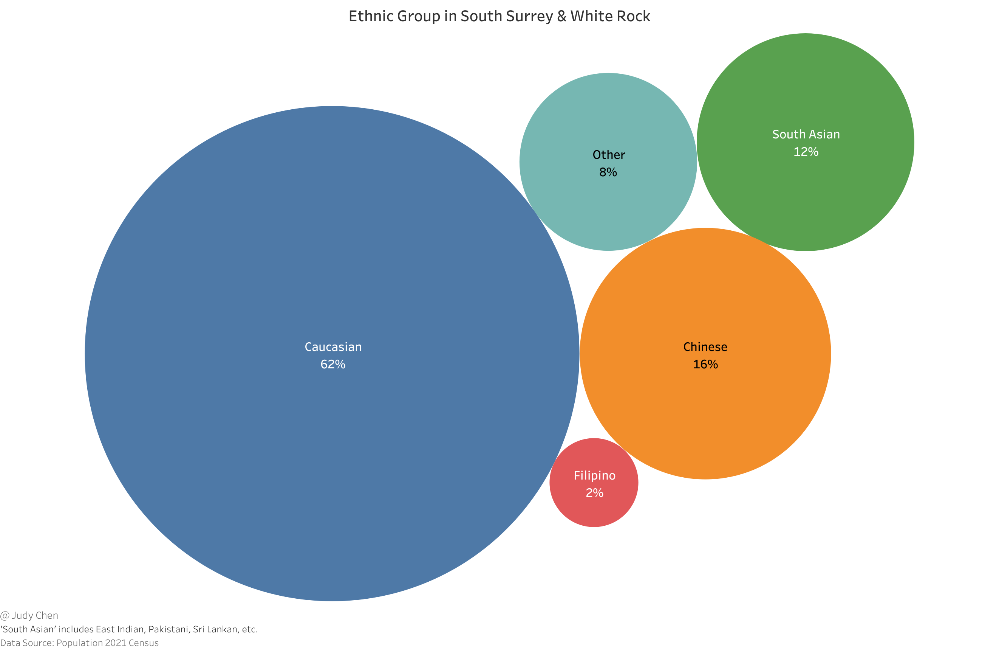
According to the 2021 Census, a third of the population (33.5%) were immigrants, while 64.6% were Canadian-born, and a tiny 1.9% were non-permanent residents.
The map below illustrates the top five places of origin of recent immigrants living in South Surrey & White Rock in 2021, wherein about half of the recent immigrants were from China. It is noteworthy that more than 5% of the recent immigrants were from the neighbor country-United States of America.
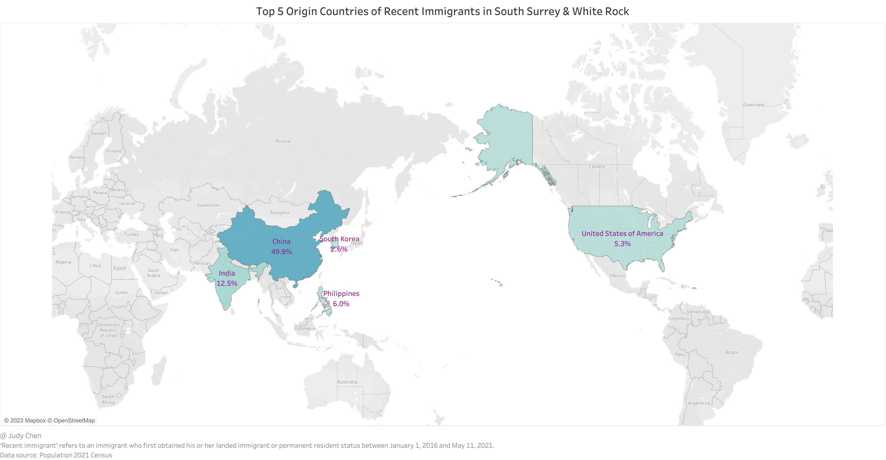
‘Recent immigrant’ refers to an immigrant who first obtained his or her landed immigrant or permanent resident status between January 1, 2016 and May 11, 2021.
Languages#
English taken the crown at 77%, beating Metro Vancouver’s 66%. Mandarin even joined the party at around 10%, while in Metro Vancouver, Mandarin and Cantonese made a joint appearance at roughly 5%.
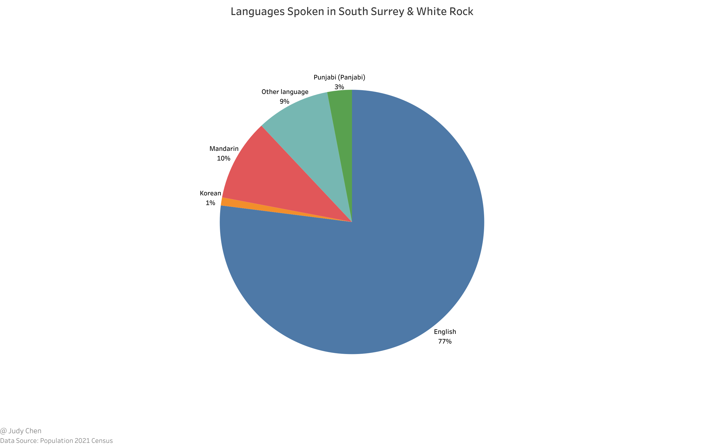
Household Income#
In 2020, the median household income in South Surrey & White Rock was $95,000, slightly edging out Metro Vancouver at $90,000. It’s a place where 53% of households earn less than $100,000, while 16% flaunt incomes of $200,000 or more.
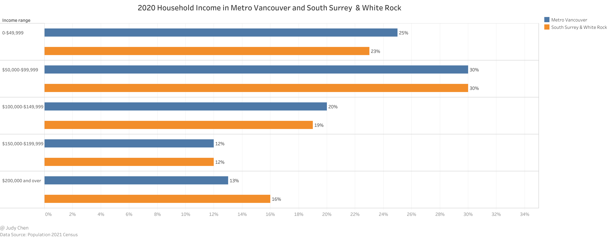
Dwellings#
With 47,405 occupied private dwellings, South Surrey & White Rock offered a variety of housing, with apartments accounting for only 36% in 2021. Most homes are spacious, making you feel like you’ve got room to breathe.
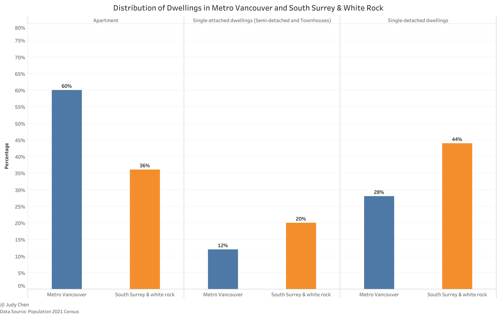
Ownership was the name of the game in South Surrey & White Rock, with a homeownership rate of about 77%, surpassing Metro Vancouver’s 62%. Even though home values hovered around $1,316,000, it was still a real estate wonderland.
Education#
From elementary to secondary schools, the schools in South Surrey & White Rock are highly rated and offer a great education for students of all ages. This is a huge advantage for families who want to ensure that their children receive the best possible education.
Elementary Schools#
There are 17 public elementary schools and 3 private schools serve the region of South Surrey & White Rock at the time. In order to relieve school overcrowding in the area, Douglas Elementary and Edgewood Elementary were opened in 2020 and 2021 respectively, and a new elementary school - Ta’talu Elementary, is currently under construction and sets to open its doors in 2025.
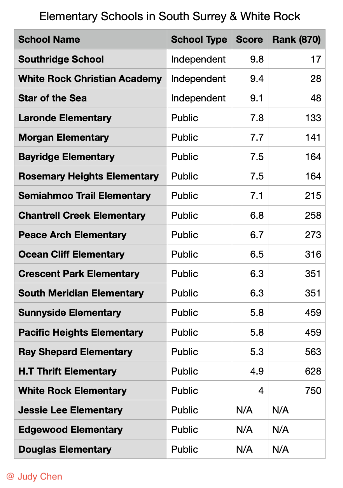
Secondary Schools#
Four public secondary schools and two private schools serve the region of South Surrey & White Rock, wherein Southridge School takes the top spot, Semiahmoo Secondary flaunts its IB program, Earl Marriott Secondary is a French Immersion high school, and Grandview Heights Secondary is a newly-opened secondary school with world-class facilities.
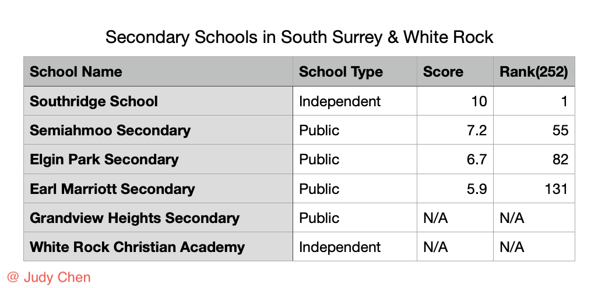
All school ranks are from research by The Fraser Institute
Health Care#
Peace Arch Hospital is the only hospital serves the region of Surrey Surrey & White Rock now, and a new hospital is planned to be built in Cloverdale near South Surrey to help meet the health-care needs of rapidly growing community.
White Rock/South Surrey Public Health Unit provides residents with multiple health-care services such as dental care, free fluoride varnish program, flu program, pregnancy and early child health, etc.
But that’s not all. You’ll find medical clinics, health clinics, dental clinics, and optometry clinics dotting the landscape.
Neighbourhoods#
Generally, the region of South Surrey & White Rock can be divided into 9 wonderful neighbourhoods shown as the following map. Each neighborhood has its unique charm and character, catering to a diverse range of lifestyles and preferences. Let’s explore it!
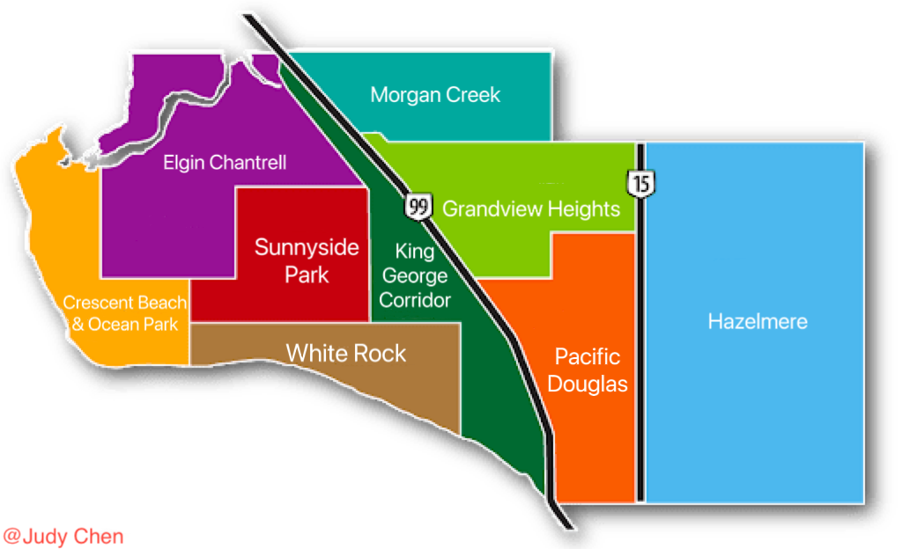
Crescent Beach & Ocean Park#
Crescent Beach and Ocean Park are both located on the Semiahmoo Peninsula, a narrow strip of land that juts out into the waters of Semiahmoo Bay. This location gives residents access to a wealth of natural beauty, including sandy beaches, wooded trails, and stunning ocean views.
Amenities: Ocean Park Shopping Centre, Blackie Spirit Park, 1001 Steps Park, Surrey Libraries-Ocean Park Branch.
Crescent Beach & Ocean Park has a range of real estate options, from cozy cottages to spacious waterfront homes, wherein most are single-detached houses. In August 2023, within the Crescent Beach & Ocean Park, the MLS® HPI price for single-detached house is around $1.9 million, the MLS® HPI price for townhouse is around $1.0 million, and the MLS® HPI price for apartment is around $0.5 million.
HPI - Home Price Index
Elgin Chantrell#
Elgin Chantrell is located in the heart of the peninsula, bordered by the picturesque Crescent Road to the north, 128th Street to the west, 20th Avenue to the south, over to 140th Street and back to King George Highway to the east.
Amenities: Crescent Park, Elgin Heritage Park, Historic Stewart Farm, Nico-Wynd Golf Course
The majority of residents in Elgin Chantrell are families with a high percentage of children under the age of 18. The neighbourhood is also home to a significant number of retirees and empty nesters. Elgin Chantrell boasts large, luxurious homes on generous lots, often with stunning views. In August 2023, within the Elgin Chantrell, the MLS® HPI price for single-detached house is around $2.5 million, and the MLS® HPI price for townhouse is around $1.2 million.
Grandview Heights#
Grandview Heights is a relatively new neighbourhood, having been developed in the early 2000s, and is the fastest growing community in South Surrey recently. Located east of King George Corridor and south of Morgan Creek, the borders of Grandview Heights are 32nd Avenue to the north, 176th Street to the east, Highway 99 to the west and 20/24 Avenue to the south.
Amenities: Grandview Corners, The Shops at Morgan Crossing, Edgewood Park, Grandview Heights Aquatic Centre, Southridge School
Growing neighbourhoods with exciting new detached houses and townhouses in carefully planned communities and affordability, diverse array of amenities, and excellent schools are drawing more and more younger families and singles to the area. In August 2023, within the Grandview Heights, the MLS® HPI price for single-detached house is around $2.1 million, the MLS® HPI price for townhouse is around $1.0 million, and the MLS® HPI price for apartment is around $0.7 million.
Hazelmere#
On the east side of South Surrey, Hazelmere is a beautiful and peaceful neighbourhood that boasts stunning natural scenery, rich history, and a tight-knit community. With its tranquil setting and convenient location, Hazelmere is a popular destination for those seeking a quiet and serene lifestyle without sacrificing the benefits of urban living.
Amenities: Hazelmere Golf Course, Hazelmere Pumpkin Patch, Hazelmere Equestrian Centre, Redwood Park, Hazelmere RV Park
Hazelmere is a hidden gem in South Surrey and provides a wide variety of housing options ranging from spacious estate homes to cozy cottages and modern townhouses, wherein single-detached houses are typically above $2 million.
Morgan Creek#
Morgan Creek is an exclusive neighbourhood set amongst blueberry fields and Agricultural Land Reserve, and is located with 40th Avenue to the north, 32nd Avenue to the south, 168th Street to the east and 152nd Street to the west in South Surrey.
Amenities: Morgan Creek Golf Course (one of BC’s best golf courses), Morgan Creek Park, Blumsen Park
Morgan Creek is home to many large executive-style family homes with generous lots, some overlooking the lush fairways of Morgan Creek Golf Club. In addition, there’s a good selection of new and soon-to-be-built deluxe townhomes and condominiums. In August 2023, within the Morgan Creek, the MLS® HPI price for single-detached house is around $2.3 million, the MLS® HPI price for townhouse is around $0.9 million, and the MLS® HPI price for apartment is around $0.7 million.
Pacific Douglas#
Pacific Douglas is a neighbourhood located in the southernmost tip of Surrey, bordered by 0 Avenue and the US border to the south, 20/24 Avenue to the north, 176th Street to the east and Highway 99 to the west. It is a rapidly growing area attracting young families and retirees alike, with its charming streets, new developments, and proximity to parks, beaches, and shopping centres.
Amenities: Darts Hill Garden Park, Peace Portal Golf Course, Peach Arch Golf Centre, The Glades Woodland Garden
Proximity to the US border and major transport routes make Pacific Douglas a hotspot for renters, especially for condos and townhouses. In this region, you can expect newer, smaller homes and more affordable prices compared to other South Surrey areas. In August 2023, within the Pacific Douglas, the MLS® HPI price for single-detached house is around $2.0 million, and the MLS® HPI price for townhouse is around $0.9 million.
Sunnyside Park#
Sunnyside Park is the heart of all things athletic in South Surrey, and is located just minutes from all of the amenities and services that South Surrey has to offer. Whether you need to pick up groceries, grab a coffee, or go shopping, everything you need is just a short drive away.
Amenities: South Surrey Athletic Park, South Surrey Arena, South Surrey Indoor Pool, Sunnyside Acres Urban Forest Park, Semiahmoo Shopping Centre, Surrey Libraries-Semiahmoo Branch, Semiahmoo Secondary
Primarily a residential community, Sunnyside Park has a mix of older homes within walking distance to Semiahmoo Shopping Centre and newer condos, townhouses, and single-family homes ranging from modest to magnificent. In August 2023, within the Sunnyside Park, the MLS® HPI price for single-detached house is around $1.7 million, the MLS® HPI price for townhouse is around $1.1 million, and the MLS® HPI price for apartment is around $0.6 million.
White Rock#
The City of White Rock stretches from 136th Street to the West, 160th Street to the East, North Bluff Road (16th Avenue) to the north and Marine Drive to the south. It is known as a wonderful place to retire with many amenities for seniors, but it also has a vibrant community of young families with many parks, sports facilities, local coffee shops, bistros, fine dining, live music venues, community events, churches and activities for the whole family.
Amenities: White Rock Beach, Centennial Arena, Peace Arch Hospital, Centennial Park, Semiahmoo Park, White Rock Farmers Market, White Rock Christian Academy
White Rock is a great place to live for anyone who loves the beach, mild weather, and a small-town feel. It offers a variety of housing, from single-family homes on smaller lots to deluxe condos and waterfront estates. In August 2023, within the White Rock, the MLS® HPI price for single-detached house is around $1.9 million, the MLS® HPI price for townhouse is around $1.0 million, and the MLS® HPI price for apartment is around $0.6 million.
King George Corridor#
Bordered by Highway 99 to the east, King George Corridor is convenient for the homeowner looking for easy access to Vancouver, Richmond or the USA. The King George Corridor is surprisingly quiet, located between two major arteries with greenbelts providing a great buffer and pleasing backdrop.
Amenities: Peace Arch Provincial Park, South Point Exchange Shopping Centre, Bakerview Park, Sunnyside Park, Peninsula Village Shopping Centre
King George Corridor offers a mix of single-detached houses, from older bungalows to newer custom builds, plus townhouse and condo developments for more budget-conscious buyers. In August 2023, within the region, the MLS® HPI price for single-detached house is around $1.8 million, the MLS® HPI price for townhouse is around $0.9 million, and the MLS® HPI price for apartment is around $0.7 million.
In Conclusion, Hold on to Your Sand Buckets!#
South Surrey & White Rock offers the perfect blend of coastal living and suburban charm, but like any captivating story, it comes with its share of caveats. Before you pack your bags and head to this sunny paradise, it’s necessary to consider factors as follows:
Traffic Troubles: While it’s well-connected by major highways, traffic congestion during rush hours can test your patience.
Public Transit Predicament: Limited public transit options mean you’ll likely rely heavily on your car for daily commutes.
Job Juggling: Job opportunities can be somewhat limited, potentially requiring longer commutes to major employment hubs.
School Crowding: While the schools are top-notch, they can get crowded due to the area’s popularity, potentially affecting classroom sizes.
South Surrey & White Rock is like a beautiful beach day – full of sunshine and sandcastles, but with the occasional wave that catches you by surprise. It’s a place where coastal beauty meets suburban comfort, a haven for families, retirees, and beach lovers alike. So, before you make your move, make sure to weigh these factors carefully and ensure they align with your lifestyle and priorities.
September 2023